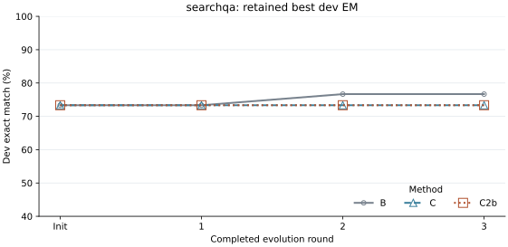
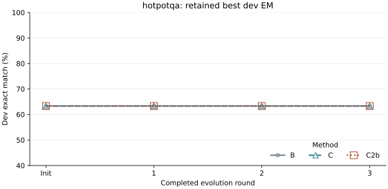
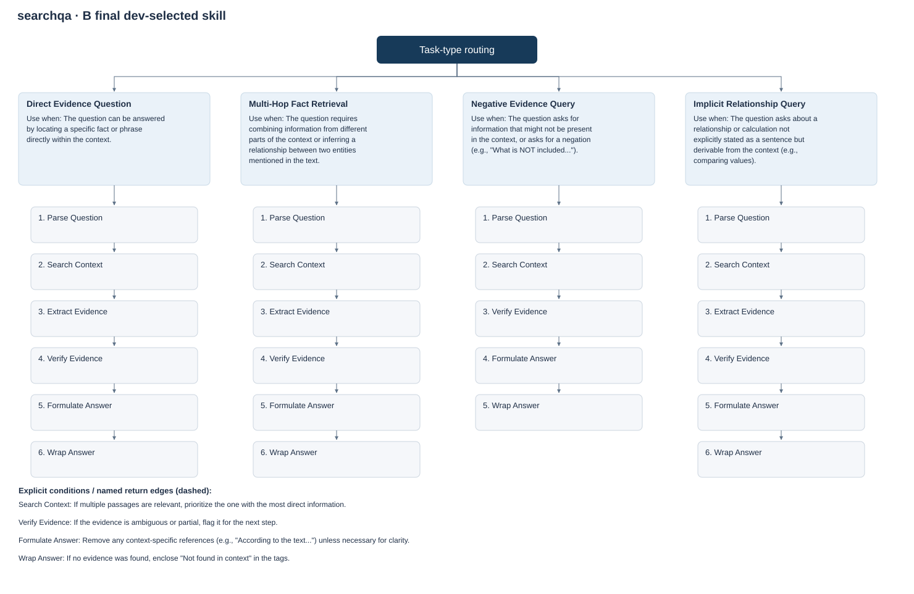
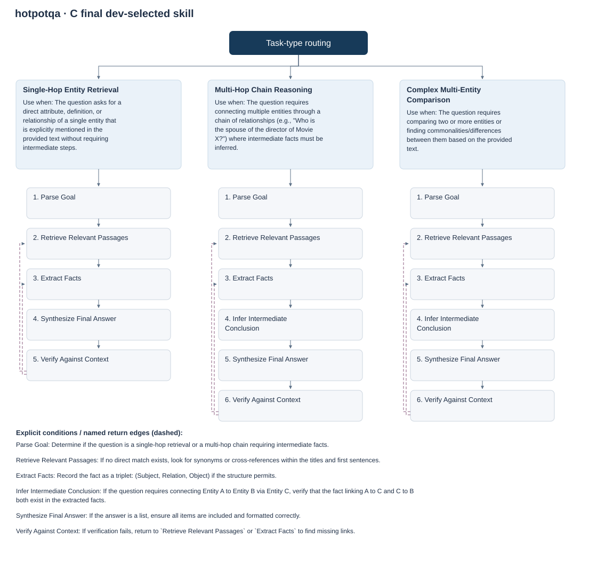

1 · 主要结果
- searchqa：B 23/30，C 22/30，C2b 22/30。C2b 相对 B 的 EM 差为 -3.33 个百分点，相对 C 为 +0.00 个百分点。
- hotpotqa：B 19/30，C 19/30，C2b 19/30。C2b 相对 B 的 EM 差为 +0.00 个百分点，相对 C 为 +0.00 个百分点。
| 数据集 | 方法 | 正确/n | EM | F1 | 平均秒 | p50秒 | p95秒 | 基础设施错误 | 拒答 | 格式失败 |
|---|---|---|---|---|---|---|---|---|---|---|
| searchqa | B | 23/30 | 76.67% | 81.56% | 1.38 | 0.99 | 1.22 | 0 | 0 | 0 |
| searchqa | C | 22/30 | 73.33% | 78.22% | 1.57 | 1.07 | 2.29 | 0 | 0 | 0 |
| searchqa | C2b | 22/30 | 73.33% | 78.22% | 1.57 | 1.07 | 2.29 | 0 | 0 | 0 |
| hotpotqa | B | 19/30 | 63.33% | 74.89% | 38.75 | 34.02 | 54.66 | 0 | 0 | 0 |
| hotpotqa | C | 19/30 | 63.33% | 74.89% | 38.75 | 34.02 | 54.66 | 0 | 0 | 0 |
| hotpotqa | C2b | 19/30 | 63.33% | 74.89% | 38.75 | 34.02 | 54.66 | 0 | 0 | 0 |
延迟单位：秒，来自各自被选技能的原始 dev 观测；相同技能命中验证缓存时沿用原观测，未额外重测。历史 B/C 与本次 C2b 的服务负载可能不同。EM/F1 为原评分规则，未为名称别名或集合顺序改分。
逐题修复与退化
| 数据集 | 比较口径 | 参照 → 新方法 | 修复 | 退化 | 修复率 | 退化率 | 都对 | 都错 | ΔEM百分点 | 95%区间 |
|---|---|---|---|---|---|---|---|---|---|---|
| searchqa | 完整三轮 | B → C2b | 1 | 2 | 14.29% | 8.70% | 21 | 6 | -3.33 | [-13.3, 6.7] |
| searchqa | 完整三轮 | C → C2b | 0 | 0 | 0.00% | 0.00% | 22 | 8 | +0.00 | [0.0, 0.0] |
| searchqa | 共同预算截点 | B → C2b | 1 | 2 | 14.29% | 8.70% | 21 | 6 | -3.33 | [-13.3, 6.7] |
| searchqa | 共同预算截点 | C → C2b | 0 | 0 | 0.00% | 0.00% | 22 | 8 | +0.00 | [0.0, 0.0] |
| hotpotqa | 完整三轮 | B → C2b | 0 | 0 | 0.00% | 0.00% | 19 | 11 | +0.00 | [0.0, 0.0] |
| hotpotqa | 完整三轮 | C → C2b | 0 | 0 | 0.00% | 0.00% | 19 | 11 | +0.00 | [0.0, 0.0] |
| hotpotqa | 共同预算截点 | B → C2b | 0 | 0 | 0.00% | 0.00% | 19 | 11 | +0.00 | [0.0, 0.0] |
| hotpotqa | 共同预算截点 | C → C2b | 0 | 0 | 0.00% | 0.00% | 19 | 11 | +0.00 | [0.0, 0.0] |
箭头左侧为参照。修复率=左侧错误中被 C2b 修复的比例；退化率=左侧正确中被 C2b 答错的比例。区间是固定 dev 题目上的 2,000 次配对 bootstrap 95% 区间，单位百分点；未包含训练 seed 或反复使用 dev 造成的不确定性。
SearchQA：C2b 最终保留共同初始化，与原 C 的最终技能、全部 dev 预测相同。它没有取得新增的最终修复；相对 B 的 1 修复／2 退化是两个最终技能之间的差异，不能称为 C2b 学到的修复。
SearchQA 六个候选的 dev 正确数为 20、22、21、20、21、22，起点 22。相对各自父代，六个候选均没有修复 dev 错题；退化主要集中在 relax→loosen up、Three→3 等严格答案形式变化。不能把所有变化解释为推理能力下降。
SearchQA 输入规范性改善但收益未出现：原 C 有 3/6 候选的部分范围外内容被丢弃、2/6 新增 gold 相关行、1 个 no-op；C2b 这三项均为 0。成功参照仍只有 2/18 次曝光、1 道不同题，11/18 条诊断仍无法定位具体内容错误。
SearchQA 的训练反馈要求从问题或线索识别目标类型，但第一轮 Global Guidance 候选实际写出 “Do not infer the answer type”，并将验证请求也导向事实提取；另一图候选主要以显式疑问句作为示例。最终 dev 中陈述式线索答 True 的问题仍然存在。这里说明优化器可能未准确保留反馈意图，不能凭该共现断言某一指令造成分数变化。
HotpotQA 实际给六次算子调用的 18 条失败反馈，保守分类为 13 次名称／粒度重叠、3 次 token 顺序差异、2 次格式问题。3/18 次成功配对全部来自同一道商场实体列表题，F1=1 的顺序差异反复曝光；没有形成多样的多跳修复参照。分类只反映所选样本的可观察特征，不能证明所有失败都只是表面差异。C2b 未改变检索规则，覆盖率与原 C 不同来自实际轨迹和失败集合的变化。
HotpotQA 六个 C2b 候选的 dev 正确数为 17、17、16、17、18、17，均低于起点 19，最终 B/C/C2b 都保留相同初始化技能。候选中确有有意义的多跳修复：部分候选找回 Bangles 的 Walk Like an Egyptian，另一个找回 Blues Traveler 的 extensive use of segues；但同时在频道、角色、作品归属等题目退化，收益被抵消。不能将候选中的局部修复表述为最终方法提升。
HotpotQA 新生成的 180 条候选 dev 观测中，C2b 有 4 次达到 QA 输出上限且未获得合规答案（B 为 5、原 C 为 4）；120 条父代 train 观测中有 2 次（B 为 3、C 为 2）。C2b 另有 1 次算子输出达到 3,072 token 上限，在原有两次尝试规则内重试成功。这些是运行日志证明的截断，不能都归因于推理错误；也不能因为截断就假定延长输出后一定答对。最终被选技能的格式失败为 0，原评分、输出上限和重试次数均保持不变。
两套数据合计，原 C 的 12 个候选中有 8 个生成了部分范围外内容、6 个在实际新增技能中出现 gold 相关行；C2b 降为 2/12 和 0/12，且没有 no-op。但 HotpotQA 第二轮 Global Guidance 候选仍把训练题的 New Orleans / New Orleans, Louisiana 写进通用技能；这说明消除 gold 字样不等于消除训练实体复用。该候选未获最终选择。
下一步的证据指向三点，但本轮没有追加改动或实验：一是检查多跳反馈是否同时保留两端关系证据，而非仅保证存在上下文片段；二是减少低价值的同一题顺序差异参照反复曝光，并把严格 EM 的名称差异与真正关系错误分开分析；三是在不增加输出预算的前提下让技能采用更短的核验流程，减少推理展开导致的截断。这些建议需要新的 train/dev 对照或消融，当前结果不能证明其有效。
展开最终 dev 错题及差异题的逐题复核
| 数据集 | 题目 ID | 复核类别 | 证据与限制 |
|---|---|---|---|
| searchqa | 24143f01e7dd455e86c34a4a6f4ed3b9 | 回答类型错误 | 题目要填出眼部结构，C2b 只给 True；可见文本直接包含 cornea 与 stroma、折叠角膜瓣的关系。B 返回 cornea。Parse Question 要求识别所需信息，但保留技能没有明确约束陈述式线索必须补出实体。响应未提供过程，不能断言具体节点执行错误。 |
| searchqa | f0c26f4f2e9f4d1d84b4f13cb201cbeb | 检索片段字段混淆 | 可见片段为 MONEY FOR NOTHING | 题目 | a handout，C2b 与 B 都把栏目名当成答案。Extract Evidence 的忽略噪声要求未能防止这种输出；这是可观察的字段混淆，不是不可见节点轨迹的证明。 |
| searchqa | f03757766e034c539bf2595428c03626 | 双答案完整性修复 | C2b 返回 be/bee，保留 Exist 与 bonnet intruder 两个线索；B 只返回 bee。上下文直接给出 be/bee。C2b 最终技能仍来自共同初始化，不能把这项 B→C2b 差异解释成 C2b 三轮新学到的修复。 |
| searchqa | e3b96fc1b99247ebada09a84fa5fd205 | 题干目标欠明确 | 题干只有引文，参考为 Greek。C2b 扩写为苏格拉底、审判及柏拉图的介绍，B 为 Socrates；可见文本同时含 Ancient Greek 和归属信息。题干未说明要求语言或作者，因此保留标注歧义，不将其简单归为知识错误。C2b 的长句也没有遵守短答案要求。 |
| searchqa | 1a78a8cf476c4a0dbf551558da1d879b | 答案粒度差异 | C2b 与 B 都答 Black Licorice，参考只含 licorice，F1 为 2/3。属于额外颜色修饰带来的严格 EM 差异；Formulate Answer 的精简要求没有指定应删除哪些限定词，不擅自改为正确。 |
| searchqa | c7bd32aee95f485d85d0b6749d542c51 | 回答类型错误 | 陈述式线索需要人名，C2b 与 B 都答 True。上下文含 Sirhan Sirhan 及假释报道；缺少显式输出槽位约束是待验证的技能局限，当前只能观察到答案类型错误。 |
| searchqa | 5324041c25d04316a800ccba2d79a2c7 | 回答类型错误 | 题干要填人物，B 回答 Mickey Spillane，C2b 只答 True。上下文含 Spillane 与相关作品。Parse Question 的通用意图要求不足以保证陈述式线索得到实体答案；无输出推理，不能定位实际内部路径。 |
| searchqa | c9f3a971abe64853aca3e0bb1fea6962 | 称谓与名称粒度 | 参考 (Joseph) McCarthy，C2b 与 B 都输出 Senator Joseph McCarthy，F1=0.8。人名主体一致但多了 Senator；严格评分不忽略该称谓，保留原分数。 |
| searchqa | 982e414b371248788c72732975949957 | 过强的显式证据要求 | C2b 的原响应已将 Pastor Alemn 解释为 German Shepherd，却要求片段明确证实 Chile dogs 的完整关系，最终答 Not found in context；B 同样失败。与 Verify Evidence 的显式证据要求及 Recovery 回退相容，但不能据此证明某节点导致错误。 |
| hotpotqa | 5a733b835542991f9a20c6b2 | 题意与参考答案需回查 | 可见上下文把 The Princess and the Frog 明确描述为电影，把 The Frog Prince / Iron Henry 描述为其童话来源。题目问电影而参考答案给出 The Frog Prince，存在答案类型或标注歧义；需回查原题，不能直接把这次 EM=0 当作事实推理错误。 |
| hotpotqa | 5a793bc95542994bb9456fc3 | 同一人物的名称表述差异 | 出生年份比较为 1982 早于 1987，模型选中了题目中的 Andy Roddick；参考答案要求文档正文的全名 Andrew Stephen Roddick。同一实体的常用名与全名不被当前严格 EM 合并，F1 为 0.4。 |
| hotpotqa | 5add3fe05542992c1e3a2580 | 歌曲选择与年份口径需复核 | 模型选择专辑段落提到的 In Another's Eyes，并称没有其他相关歌曲，但独立 Two Piña Coladas 段落明确关联 Sevens。该段落又写单曲于 1998 年发行，题目称 1997 song，年份口径也需回查。保留参考答案及原始零分，不直接将此归因为某个内部节点。 |
| hotpotqa | 5a776b82554299373536026f | 答案粒度与参考不一致 | 已完成赛事→日本→日元的关系链；输出 Japanese yen，参考为 yen。多出的 Japanese 导致 EM=0，F1=0.667，不能据此认定币种识别错误。 |
| hotpotqa | 5adf62d05542992d7e9f932d | 同名实体混淆 | 原始响应先引入 RNC 主席 Michael Steele，又把 The Bangles 成员 Michael Steele 的音乐语境与之混用，并误读 Ezo 影响关系的方向，最后回答 None。可见文本中的 The Bangles 段落包含参考单曲 Walk Like an Egyptian。 |
| hotpotqa | 5ac2cdaa554299657fa29070 | 题意与参考答案需回查 | 模型按原生地回答 South American rainforests / Americas；参考答案则选择 temperate climates。可见文本只明确把温带分布用于 Aloysia，Neoregelia 段落描述南美雨林。题目 where 的地理/气候维度以及参考是否适用于两者均需回查，原始评分保持不变。 |
| hotpotqa | 5ae788fa55429952e35ea964 | 多跳关系未完成 | 可见文档给出 On Tour Forever 是 Blues Traveler 的现场 EP，并在乐队段落描述现场演出以 extensive use of segues 著称。模型要求文本直接把专辑和 trademark 写在同一句，因而拒答，未完成这条跨文档关联。 |
| hotpotqa | 5ab236645542993be8fa98c9 | 答案粒度与参考不一致 | 模型已找到 UNHCR 并回答正确数量 two；参考答案是完整短语 two Nobel Peace Prizes。问题问 how many，数量正确仍被当前 EM 判零，F1 为 0.4。 |
| hotpotqa | 5a81e8ea5542995ce29dcc73 | 同一人物的名称表述差异 | 模型正确找到扮演 Nettie Harris 的演员，但输出文档标题 Akosua Busia，参考答案使用正文全名 Akosua Gyamama Busia。遗漏中间名导致 EM=0，F1=0.8。 |
| hotpotqa | 5adf34d35542993a75d26425 | 同一人物的名称表述差异 | 模型已找到 Hume–Adams 对话中的 Sinn Féin 领导人 Gerry Adams，参考答案写作 Gerard "Gerry" Adams。两者在提供的正文中指向同一人，名称形式差异导致 EM=0、F1=0.8。 |
| hotpotqa | 5abe87cb5542993f32c2a156 | 多跳关系未完成 | 模型停在资助来源 National Lottery，没有继续读取 National Lottery (United Kingdom) 段落中的类型 state-franchised。题目问彩票类型，输出了中间实体名称。 |
2 · C2b 改了什么，哪些保持固定
- 对训练失败标注保守诊断：答案类型、token 顺序、名称／粒度重叠、格式与未能定位的内容错误；不更改评分。
- 从完整训练上下文和响应中，按问题内容词、引用短语、年份及训练答案线索提取相关原文片段；记录字符位置与来源 hash。训练 gold 仅用于诊断与定位，QA 推理输入不含 gold。
- 用“触发条件 → 证据检查 → 行为 → 应保留的正确行为”组织反馈，并强调 mutation_other / mutation_graph 的章节范围。语义检查只记录结果，不拒绝、重抽或增加候选。
- 无成功参照时仍使用有证据和不确定性说明的失败反馈，不再逐字回退 B。配对检索本身保持原样，未实现 C2c。
固定设置：seed=42；每轮每父代 20 道 train；失败 k=3；3 轮 × 2 个候选；QA 输入上下文上限 4096 tokens，QA 输出 2048，算子输出 3072，技能和反馈各 2048；QA temperature=0.0，算子 temperature=0.6，并发 1，最多 2 次尝试。每方法预算：600 次调用、700,000 生成 tokens、9 小时。生存选择按 EM，平分优先父代和原顺序；最终最佳按 EM 与当前顺序。父代排名仍使用上游 EM/F1 规则。
共享初始化按原账本计入每个方法的逻辑预算，物理费用不重复计算。C2b 通过独立反馈模块接入每个数据集原 B/C 的精确代码快照。原版 C 的文件和运行结果保持不变。
相同第一轮输入的重复性检查
| 数据集 | 比较 | 相同输入数 | 原响应相同 | 预测相同 | EM相同 |
|---|---|---|---|---|---|
| searchqa | B → C2b | 40 | 40 | 40 | 40 |
| searchqa | C → C2b | 40 | 39 | 39 | 40 |
| hotpotqa | B → C2b | 40 | 40 | 40 | 40 |
| hotpotqa | C → C2b | 40 | 40 | 40 | 40 |
每个比较含 2 个初始化父代 × 20 道训练题。输入技能、可见上下文及生成参数完全匹配；输出是否一致用于观察服务重复性。服务没有公开权重 revision，不能证明历史与当前权重完全相同。
3 · 三轮演化与训练观察


纵轴 dev EM（%），横轴完整轮次。折线为每轮保留的最佳技能；重叠线可能被遮挡，请结合下方候选表。来源：各方法 history.json，本次报告生成时读取。
所有候选，不只展示获胜者
| 数据集 | 方法 | 轮 | 候选 | 算子 | 父代 | dev EM | dev F1 | 被保留 | 尝试 |
|---|---|---|---|---|---|---|---|---|---|
| searchqa | B | 1 | g0001_i0000 | mutation_other | g0000_i0001 | 73.33% | 78.22% | True | 1 |
| searchqa | B | 1 | g0001_i0001 | mutation_graph | g0000_i0001 | 73.33% | 78.22% | False | 1 |
| searchqa | B | 2 | g0002_i0000 | mutation_other | g0001_i0000 | 76.67% | 81.56% | True | 1 |
| searchqa | B | 2 | g0002_i0001 | mutation_graph | g0000_i0001 | 70.00% | 74.89% | False | 1 |
| searchqa | B | 3 | g0003_i0000 | mutation_other | g0002_i0000 | 73.33% | 78.22% | False | 1 |
| searchqa | B | 3 | g0003_i0001 | mutation_graph | g0002_i0000 | 73.33% | 78.22% | False | 1 |
| searchqa | C | 1 | g0001_i0000 | mutation_other | g0000_i0001 | 73.33% | 78.22% | True | 1 |
| searchqa | C | 1 | g0001_i0001 | mutation_graph | g0000_i0001 | 73.33% | 78.22% | False | 2 |
| searchqa | C | 2 | g0002_i0000 | mutation_other | g0001_i0000 | 73.33% | 78.22% | False | 1 |
| searchqa | C | 2 | g0002_i0001 | mutation_graph | g0000_i0001 | 70.00% | 74.89% | False | 1 |
| searchqa | C | 3 | g0003_i0000 | mutation_other | g0000_i0001 | 73.33% | 78.22% | False | 1 |
| searchqa | C | 3 | g0003_i0001 | mutation_graph | g0000_i0001 | 70.00% | 74.89% | False | 1 |
| searchqa | C2b | 1 | g0001_i0000 | mutation_other | g0000_i0001 | 66.67% | 71.56% | False | 1 |
| searchqa | C2b | 1 | g0001_i0001 | mutation_graph | g0000_i0001 | 73.33% | 78.22% | True | 2 |
| searchqa | C2b | 2 | g0002_i0000 | mutation_other | g0001_i0001 | 70.00% | 74.89% | False | 1 |
| searchqa | C2b | 2 | g0002_i0001 | mutation_graph | g0000_i0001 | 66.67% | 71.56% | False | 1 |
| searchqa | C2b | 3 | g0003_i0000 | mutation_other | g0000_i0001 | 70.00% | 74.89% | False | 1 |
| searchqa | C2b | 3 | g0003_i0001 | mutation_graph | g0000_i0001 | 73.33% | 78.22% | False | 1 |
| hotpotqa | B | 1 | g0001_i0000 | mutation_other | g0000_i0001 | 56.67% | 68.22% | True | 1 |
| hotpotqa | B | 1 | g0001_i0001 | mutation_graph | g0000_i0001 | 53.33% | 64.89% | False | 1 |
| hotpotqa | B | 2 | g0002_i0000 | mutation_other | g0001_i0000 | 60.00% | 69.33% | True | 1 |
| hotpotqa | B | 2 | g0002_i0001 | mutation_graph | g0000_i0001 | 53.33% | 62.67% | False | 1 |
| hotpotqa | B | 3 | g0003_i0000 | mutation_other | g0000_i0001 | 53.33% | 64.89% | False | 1 |
| hotpotqa | B | 3 | g0003_i0001 | mutation_graph | g0000_i0001 | 60.00% | 72.39% | False | 1 |
| hotpotqa | C | 1 | g0001_i0000 | mutation_other | g0000_i0001 | 60.00% | 71.56% | True | 1 |
| hotpotqa | C | 1 | g0001_i0001 | mutation_graph | g0000_i0001 | 56.67% | 68.70% | False | 1 |
| hotpotqa | C | 2 | g0002_i0000 | mutation_other | g0001_i0000 | 56.67% | 68.22% | False | 1 |
| hotpotqa | C | 2 | g0002_i0001 | mutation_graph | g0000_i0001 | 50.00% | 61.56% | False | 1 |
| hotpotqa | C | 3 | g0003_i0000 | mutation_other | g0000_i0001 | 53.33% | 64.89% | False | 1 |
| hotpotqa | C | 3 | g0003_i0001 | mutation_graph | g0000_i0001 | 60.00% | 72.39% | False | 1 |
| hotpotqa | C2b | 1 | g0001_i0000 | mutation_other | g0000_i0001 | 56.67% | 66.00% | True | 2 |
| hotpotqa | C2b | 1 | g0001_i0001 | mutation_graph | g0000_i0001 | 56.67% | 68.22% | False | 1 |
| hotpotqa | C2b | 2 | g0002_i0000 | mutation_other | g0001_i0000 | 53.33% | 62.67% | False | 1 |
| hotpotqa | C2b | 2 | g0002_i0001 | mutation_graph | g0000_i0001 | 56.67% | 68.63% | False | 2 |
| hotpotqa | C2b | 3 | g0003_i0000 | mutation_other | g0000_i0001 | 60.00% | 71.56% | True | 1 |
| hotpotqa | C2b | 3 | g0003_i0001 | mutation_graph | g0000_i0001 | 56.67% | 68.74% | False | 1 |
输出截断与格式失败
| 数据集 | 方法 | 新物理调用 | train length | dev length | 算子 length | train 格式失败 | dev 格式失败 | dev 二者重叠 |
|---|---|---|---|---|---|---|---|---|
| searchqa | B | 306 | 1 | 0 | 0 | 1 | 0 | 0 |
| searchqa | C | 277 | 0 | 0 | 0 | 0 | 0 | 0 |
| searchqa | C2b | 307 | 0 | 0 | 0 | 0 | 0 | 0 |
| hotpotqa | B | 306 | 3 | 5 | 0 | 3 | 5 | 5 |
| hotpotqa | C | 306 | 2 | 4 | 0 | 2 | 4 | 4 |
| hotpotqa | C2b | 308 | 2 | 4 | 1 | 2 | 4 | 4 |
统计各条件新发出的物理请求和去重、未缓存的 QA 观测，不含共享初始化。length 表示服务返回达到输出上限；格式失败是原解析器未获得合规答案。两者不一定相等。候选的这些失败按原评分计入，不是最终所选技能的错误数；没有扩大 token 上限或追加重试。
各轮父代 train 表现
| 数据集 | 方法 | 轮 | 父代观测数 | 正确 | train EM | train F1 |
|---|---|---|---|---|---|---|
| searchqa | B | 1 | 40 | 18 | 45.00% | 60.00% |
| searchqa | B | 2 | 40 | 19 | 47.50% | 57.87% |
| searchqa | B | 3 | 40 | 21 | 52.50% | 64.48% |
| searchqa | C | 1 | 40 | 18 | 45.00% | 60.10% |
| searchqa | C | 2 | 40 | 20 | 50.00% | 60.13% |
| searchqa | C | 3 | 40 | 21 | 52.50% | 62.33% |
| searchqa | C2b | 1 | 40 | 18 | 45.00% | 60.00% |
| searchqa | C2b | 2 | 40 | 20 | 50.00% | 60.65% |
| searchqa | C2b | 3 | 40 | 21 | 52.50% | 62.73% |
| hotpotqa | B | 1 | 40 | 29 | 72.50% | 87.21% |
| hotpotqa | B | 2 | 40 | 30 | 75.00% | 87.06% |
| hotpotqa | B | 3 | 40 | 33 | 82.50% | 88.21% |
| hotpotqa | C | 1 | 40 | 29 | 72.50% | 87.21% |
| hotpotqa | C | 2 | 40 | 29 | 72.50% | 86.85% |
| hotpotqa | C | 3 | 40 | 33 | 82.50% | 89.87% |
| hotpotqa | C2b | 1 | 40 | 29 | 72.50% | 87.21% |
| hotpotqa | C2b | 2 | 40 | 29 | 72.50% | 84.91% |
| hotpotqa | C2b | 3 | 40 | 34 | 85.00% | 90.71% |
每轮 2 个父代在同一批 20 道题上各答一次，共 40 条观测。同轮按观测汇总；不同轮题目会变化。它不是最终技能在全部 100 道 train 上的独立评估，不能把跨轮变化当作同一训练集学习曲线。
4 · 配对、证据和实际采用情况
| 数据集 | 方法 | 失败曝光 | 配对曝光 | 覆盖率 | 不同配对题 | 无参照调用 | 结构化失败上下文 | 最大反馈token |
|---|---|---|---|---|---|---|---|---|
| searchqa | C | 18 | 2 | 11.11% | 1 | 4 | 6 | 1628 |
| searchqa | C2b | 18 | 2 | 11.11% | 1 | 4 | 18 | 1585 |
| hotpotqa | C | 18 | 4 | 22.22% | 2 | 2 | 12 | 1656 |
| hotpotqa | C2b | 18 | 3 | 16.67% | 1 | 3 | 18 | 1929 |
训练反馈与实际技能的具体复核
| 数据集 | 候选 | 训练题 ID | 发现 | 证据与限制 |
|---|---|---|---|---|
| hotpotqa | g0002_i0000 | 5ade88ca55429939a52fe8e7 | 多跳证据链未完整保留 | 原响应已完成 Lester J. Reed → Tulane University → New Orleans，EM=0 来自缺少参考中的 Louisiana（F1=0.8）。完整上下文字符 908 起是 Tulane 所在地，原响应字符 410 起也引用该句；C2b 实际反馈两处都未保留，却包含人物出生地及其他大学的干扰句。诊断仍保守标为名称／粒度重叠，但词面相关性检索不保证保留完整证据链。不能把本题判成未完成多跳推理。 |
| hotpotqa | g0002_i0000 | 5ade88ca55429939a52fe8e7 | 训练实体进入通用技能 | g0002_i0000 实际新增 Granularity Alignment，用 New Orleans 与 New Orleans, Louisiana 举例；两者正是这道训练题的预测和参考。没有出现 gold 字样并不意味着没有复制训练实体。题目问城市，省略州名也有粒度歧义；评分保持不变，不将这种差异伪装成已经验证的推理修复。该候选未被保留。 |
原文片段存在不代表关键证据完整，也不证明语义相关或因果关系；诊断和检索结果仍需结合完整记录复核。
C2b 实际曝光的诊断类别
| 数据集 | 保守诊断类别 | 曝光次数 |
|---|---|---|
| searchqa | unresolved_content_error | 11 |
| searchqa | answer_type_mismatch | 2 |
| searchqa | name_or_granularity_overlap | 5 |
| hotpotqa | name_or_granularity_overlap | 13 |
| hotpotqa | token_order_only | 3 |
| hotpotqa | answer_format | 2 |
C2b 各轮训练记忆
| 数据集 | 轮 | 记忆记录 | 成功观测 | 不同成功题目 |
|---|---|---|---|---|
| searchqa | 1 | 38 | 18 | 11 |
| searchqa | 2 | 53 | 25 | 18 |
| searchqa | 3 | 67 | 34 | 27 |
| hotpotqa | 1 | 39 | 28 | 16 |
| hotpotqa | 2 | 63 | 45 | 26 |
| hotpotqa | 3 | 85 | 65 | 37 |
按实际算子使用的父代反馈统计；同一父代被两个算子使用时重复计入曝光。原 C 全回退 B 的文本可能含上下文，但没有结构化 actual_packet，因此“结构化失败上下文”不等同于原 C 所有可见证据。覆盖率变化可能来自模型响应和父代演化，C2b 没有改变配对规则。
| 数据集 | 方法 | 已接受候选 | 含范围外修改 | 新增gold相关行 | 训练答案字面复用标记 | 无变化候选 | 总算子尝试 | 无效/失败算子尝试 |
|---|---|---|---|---|---|---|---|---|
| searchqa | B | 6 | 2 | 2 | 0 | 0 | 6 | 0 |
| searchqa | C | 6 | 3 | 2 | 1 | 1 | 7 | 1 |
| searchqa | C2b | 6 | 0 | 0 | 0 | 0 | 7 | 1 |
| hotpotqa | B | 6 | 2 | 2 | 0 | 0 | 6 | 0 |
| hotpotqa | C | 6 | 5 | 4 | 0 | 0 | 6 | 0 |
| hotpotqa | C2b | 6 | 2 | 0 | 1 | 0 | 8 | 2 |
字面复用标记：实际新增行包含所选训练失败的参考答案或预测短语（归一化后至少 4 字符，排除布尔词与常用拒答模板）。它可定位复制风险，但常用词也可能命中，需人工复核；未作为候选拒绝或重试条件。
“范围外修改”指生成文档中部分章节未被采用，非整个候选无效。“新增 gold 行”是文本风险标记，需结合语义复核，不等于测试答案泄漏。统计的是实际采用技能相对父代的新增行，notes 不算实现。
查看结构化配对材料与完整原始记录
5 · 全部 dev 逐题对比与完整响应
相同的可见上下文
此处仅供事后评估，不进入 C2b 训练记忆、反馈或 checkpoint 选择。报告包含所有 60 道 dev 题及三种方法的响应，避免只展示成功案例。
6 · 生成说明与实际技能差异
实际采用的差异
此候选相对父代的逐题修复与退化
此候选 dev 输出截断或格式异常的完整记录
优化器 notes 与实际采用的完整技能
此候选的技能定义图
最终技能定义图
searchqa / B 最终技能图与 Markdown

下载技能 Markdownsearchqa / C 最终技能图与 Markdown
下载技能 Markdownsearchqa / C2b 最终技能图与 Markdown
下载技能 Markdownhotpotqa / B 最终技能图与 Markdown
下载技能 Markdownhotpotqa / C 最终技能图与 Markdown

下载技能 Markdownhotpotqa / C2b 最终技能图与 Markdown
下载技能 Markdown图展示技能文件中的节点和工作流定义，不声称观测到了模型内部节点执行轨迹。
7 · 预算、公平比较与复现
本次新增 C2b 物理调用 615 次，服务报告的输入 token 1,509,898、生成 token 109,882。离线诊断、审计及报告没有模型费用。
| 数据集 | 方法 | 逻辑调用 | 新物理调用 | 逻辑生成token | 新生成token | 新输入token | 请求小时 | 失败请求 |
|---|---|---|---|---|---|---|---|---|
| searchqa | B | 367 | 306 | 19,383 | 15,920 | 605,465 | 0.359 | 0 |
| searchqa | C | 338 | 277 | 19,794 | 16,331 | 554,185 | 0.365 | 0 |
| searchqa | C2b | 368 | 307 | 19,372 | 15,909 | 619,228 | 0.361 | 0 |
| hotpotqa | B | 367 | 306 | 114,912 | 99,104 | 872,243 | 3.726 | 0 |
| hotpotqa | C | 367 | 306 | 107,531 | 91,723 | 871,924 | 1.931 | 0 |
| hotpotqa | C2b | 369 | 308 | 109,781 | 93,973 | 890,670 | 1.980 | 0 |
“逻辑”含共享初始化一次；“物理”只计该条件新发出的请求。耗时为物理请求 wall time 之和，不是 GPU 小时。生成 token 相同上限不代表实际生成量相等。
三方法共同调用／生成 token 上限的次要分析
| 数据集 | 方法 | 共同调用上限 | 共同生成上限 | 轮 | 最佳技能 | dev EM | dev F1 | 未用调用 | 未用生成token |
|---|---|---|---|---|---|---|---|---|---|
| searchqa | B | 338 | 19372 | 2 | g0002_i0000 | 76.67% | 81.56% | 73 | 3754 |
| searchqa | C | 338 | 19372 | 2 | g0000_i0001 | 73.33% | 78.22% | 72 | 4192 |
| searchqa | C2b | 338 | 19372 | 2 | g0000_i0001 | 73.33% | 78.22% | 72 | 4123 |
| hotpotqa | B | 367 | 107531 | 2 | g0000_i0001 | 63.33% | 74.89% | 102 | 26310 |
| hotpotqa | C | 367 | 107531 | 3 | g0000_i0001 | 63.33% | 74.89% | 0 | 0 |
| hotpotqa | C2b | 367 | 107531 | 2 | g0000_i0001 | 63.33% | 74.89% | 100 | 27347 |
两个上限分别取 B/C/C2b 最终逻辑用量的最小值，然后各自取同时满足双上限的最新完整轮次（初始化为第 0 轮）。只使用该轮原本由 dev 选择的最佳技能，排除未完成轮次。这是账本约束比较，不是精确相同实际费用，也不是重新训练。
代码与输入审计
| 数据集 | 共享协议代码 hash | C2b 方法 hash | 已验证检查 |
|---|---|---|---|
| searchqa | e6291efca3c706dcd41b5e6319a1568afe5f0d6b0d0193483e5f9df59b67fb89 | e933b717538cd39a312de3fc8d7b5f53ca9563cfe9219baa2727a01af3df15df | sealed method files；exact shared config/tokenizer；B train batches；parent sampling；EM survivor/final selection；random failure selection；original C pairing replay；full feedback determinism；own train-only memory；no future references；literal source offsets；feedback cap；actual optimizer exposure；memory exact replay |
| hotpotqa | 067f9db47e18c15f7f78975f73896c4ca6b25f6c477514214bae5889d3fb0f5e | e933b717538cd39a312de3fc8d7b5f53ca9563cfe9219baa2727a01af3df15df | sealed method files；exact shared config/tokenizer；B train batches；parent sampling；EM survivor/final selection；random failure selection；original C pairing replay；full feedback determinism；own train-only memory；no future references；literal source offsets；feedback cap；actual optimizer exposure；memory exact replay |
- searchqa 完整审计 JSON
- searchqa 运行前封存策略
- hotpotqa 完整审计 JSON
- hotpotqa 运行前封存策略
- C2b 实现与运行说明
- 运行中已完成反馈的跨进程重放检查（覆盖数见文件）
复现入口：python api/run_c2b.py searchqa --output 新目录 --source-ip 本机校园网IPv4，HotpotQA 将数据集改为 hotpotqa。运行会校验封存配置和初始化，不会覆盖旧目录。查看 api/C2B.md 获取完整说明。